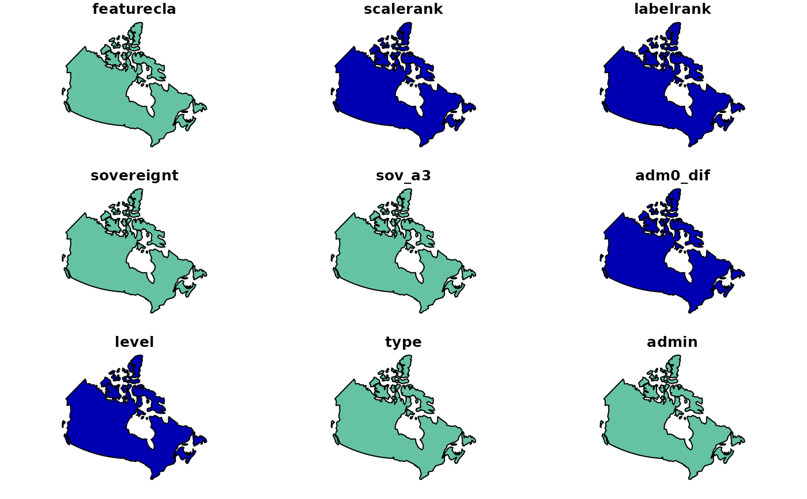
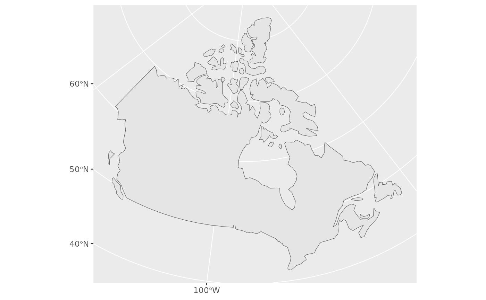

Wrapper around rnaturalearth::ne_countries() to creates a simple features
basic map of Canada with CRS 3347 (Statistics Canada Lambert).
Examples
map_canada()
#> Simple feature collection with 1 feature and 168 fields
#> Geometry type: MULTIPOLYGON
#> Dimension: XY
#> Bounding box: xmin: 3681957 ymin: 658540.6 xmax: 9016129 ymax: 5249114
#> Projected CRS: NAD83 / Statistics Canada Lambert
#> featurecla scalerank labelrank sovereignt sov_a3 adm0_dif level
#> 4 Admin-0 country 1 2 Canada CAN 0 2
#> type tlc admin adm0_a3 geou_dif geounit gu_a3 su_dif subunit
#> 4 Sovereign country 1 Canada CAN 0 Canada CAN 0 Canada
#> su_a3 brk_diff name name_long brk_a3 brk_name brk_group abbrev postal
#> 4 CAN 0 Canada Canada CAN Canada <NA> Can. CA
#> formal_en formal_fr name_ciawf note_adm0 note_brk name_sort name_alt
#> 4 Canada <NA> Canada <NA> <NA> Canada <NA>
#> mapcolor7 mapcolor8 mapcolor9 mapcolor13 pop_est pop_rank pop_year gdp_md
#> 4 6 6 2 2 37589262 15 2019 1736425
#> gdp_year economy income_grp fips_10 iso_a2
#> 4 2019 1. Developed region: G7 1. High income: OECD CA CA
#> iso_a2_eh iso_a3 iso_a3_eh iso_n3 iso_n3_eh un_a3 wb_a2 wb_a3 woe_id
#> 4 CA CAN CAN 124 124 124 CA CAN 23424775
#> woe_id_eh woe_note adm0_iso adm0_diff adm0_tlc adm0_a3_us
#> 4 23424775 Exact WOE match as country CAN <NA> CAN CAN
#> adm0_a3_fr adm0_a3_ru adm0_a3_es adm0_a3_cn adm0_a3_tw adm0_a3_in adm0_a3_np
#> 4 CAN CAN CAN CAN CAN CAN CAN
#> adm0_a3_pk adm0_a3_de adm0_a3_gb adm0_a3_br adm0_a3_il adm0_a3_ps adm0_a3_sa
#> 4 CAN CAN CAN CAN CAN CAN CAN
#> adm0_a3_eg adm0_a3_ma adm0_a3_pt adm0_a3_ar adm0_a3_jp adm0_a3_ko adm0_a3_vn
#> 4 CAN CAN CAN CAN CAN CAN CAN
#> adm0_a3_tr adm0_a3_id adm0_a3_pl adm0_a3_gr adm0_a3_it adm0_a3_nl adm0_a3_se
#> 4 CAN CAN CAN CAN CAN CAN CAN
#> adm0_a3_bd adm0_a3_ua adm0_a3_un adm0_a3_wb continent region_un
#> 4 CAN CAN -99 -99 North America Americas
#> subregion region_wb name_len long_len abbrev_len tiny homepart
#> 4 Northern America North America 6 6 4 -99 1
#> min_zoom min_label max_label label_x label_y ne_id wikidataid name_ar
#> 4 0 1.7 5.7 -101.9107 60.32429 1159320467 Q16 كندا
#> name_bn name_de name_en name_es name_fa name_fr name_el name_he name_hi
#> 4 কানাডা Kanada Canada Canadá کانادا Canada Καναδάς קנדה कनाडा
#> name_hu name_id name_it name_ja name_ko name_nl name_pl name_pt name_ru
#> 4 Kanada Kanada Canada カナダ 캐나다 Canada Kanada Canadá Канада
#> name_sv name_tr name_uk name_ur name_vi name_zh name_zht fclass_iso
#> 4 Kanada Kanada Канада کینیڈا Canada 加拿大 加拿大 Admin-0 country
#> tlc_diff fclass_tlc fclass_us fclass_fr fclass_ru fclass_es fclass_cn
#> 4 <NA> Admin-0 country <NA> <NA> <NA> <NA> <NA>
#> fclass_tw fclass_in fclass_np fclass_pk fclass_de fclass_gb fclass_br
#> 4 <NA> <NA> <NA> <NA> <NA> <NA> <NA>
#> fclass_il fclass_ps fclass_sa fclass_eg fclass_ma fclass_pt fclass_ar
#> 4 <NA> <NA> <NA> <NA> <NA> <NA> <NA>
#> fclass_jp fclass_ko fclass_vn fclass_tr fclass_id fclass_pl fclass_gr
#> 4 <NA> <NA> <NA> <NA> <NA> <NA> <NA>
#> fclass_it fclass_nl fclass_se fclass_bd fclass_ua
#> 4 <NA> <NA> <NA> <NA> <NA>
#> geometry
#> 4 MULTIPOLYGON (((4022139 196...
plot(map_canada())
#> Warning: plotting the first 9 out of 168 attributes; use max.plot = 168 to plot all

library(ggplot2)
ggplot(data = map_canada()) + geom_sf()
